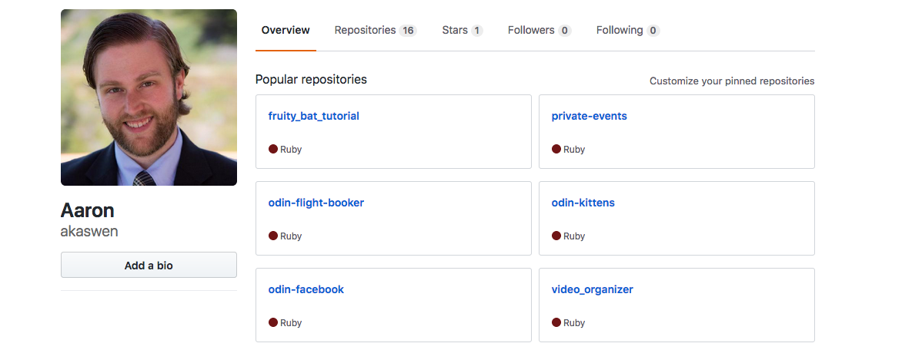
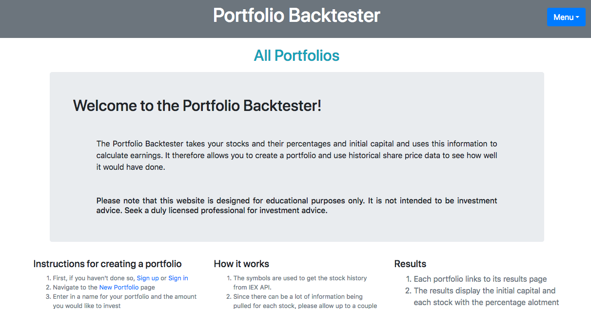
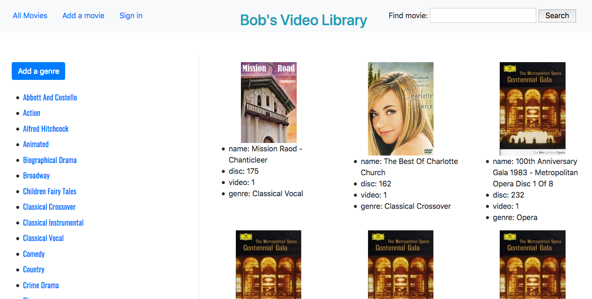
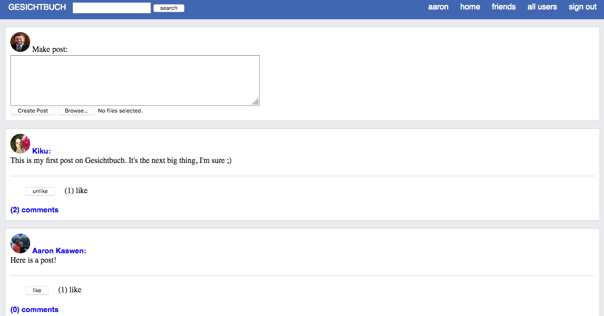
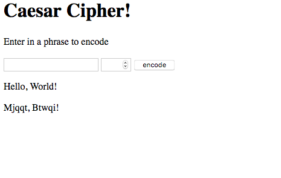

Aaron Kaswen-Wilk

Aaron Kaswen-Wilk

Aaron Kaswen-Wilk
Web Developer
aaron.kaswenwilk@zoho.com
About Me

I’ve always considered myself a problem solver. Whether it was a straightforward math problem from school, or a life problem to do with visas (funny story with some misunderstandings, I can explain later), I’ve usually found myself as someone who likes to figure out solutions to things. When I discovered programming, it really managed to scratch an itch that I hadn’t been able to get for a while in my past career as an opera singer. With performance, the work tended to fall on memorizing words, music, and staging to the point where you could perform without much thinking. Even when I was a private teacher, the best parts for me (other than seeing my students succeed of course!) were figuring out the best way to communicate what my student needed to do in a way that they would best understand it. But with web development, I really feel a connection. I was surprised when I first began learning that I could sit in front of a computer for many hours at a time writing code. The complex problems and learning were very fun and therefore, the time would fly by. I still enjoy music of course, and I don’t regret any of the time I spent dedicating myself to learning piano and voice. I’m especially excited now to bring all those skills I learned to something new. Namely, the ability to sit down and focus for hours at a time. Thus it is with pride and excitement that I refer to myself as a Ruby on Rails developer!
Portfolio
-

My Github Page
I currently have several projects that I’m either working on for fun or as part of my course. Feel free to peruse at your leisure.
-

Stock Portfolio Backtester
I made this project based on my interest in stock market investing. This app allows you to generate various portfolios with custom allocations of various stocks. It then uses an api provided by iex to pull up to 5 years' worth of history for each stock and calculates the average returns for different periods. You can register an account and give it a try, and also see all of the other portfolios other users have made (and how successful they may or may not have been). I also used this project as an opportunity to teach myself rspec (as opposed to minitest which I had been using in the past).
-

Video Organizer App
This is a website I made for my father. He has several hundred dvds split between two large dvd players. I made this so he would have a way to catalogue and easily access each dvd and find out which device they are in and what number they are in the tray.
-

Odin Facebook Project
This was made as part of the curriculum for The Odin Project. I put together a functional Facebook clone that allows for social networking with all of its users. This was built with Ruby on Rails and was also my first app to implement devise for authentication.
-

Caesar Cipher
This is a very simple app I built to teach myself Sinatra. I didn’t want to get pigeonholed into Ruby On Rails, and felt it would be important to also have experience in different web-building frameworks.